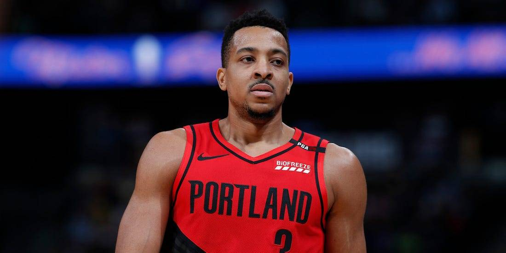

Con un inicio bien apresurado a la nueva temporada, una off-season reducidad a tiempo récord, y nos fiestas que pasaron aun más rápido que todo esto último: ya se nos completaron las dos primeras jornadas en la sexta edición de la Dinasty League.
Si bien, quizá esta pueda llegar a ser el año más competitivo de la liga desde su creación, los contendientes parecen mantenerse, pero nos queda mucho partido antes de sacar conclusiones. Mientras tanto, repasaremos los sucedido en los 2 primeros matchups de cada equipo, sus fuerzas y debilidades, sus protagonistas y un poco más. Empezaré desde el fondo, con el mismo orden de rankeo que está utilizando ESPN en este momento:
12) Mamba Mentality: 0-2
Week 1: El equipo de León comenzó con la baja de Jaren Jackson Jr. pero a pesar de todo le alcanzó para darle pelea en la primera semana a Clutch City, estuvo tan cerrado el match, que con solo par de asistencias y triples, Mamba se habría llevado su primera victoria de la temporada. Destacaron las actuaciones de Stephen Curry (75 puntos, 22 asistencias, 5 robos) y Markelle Fultz (62 puntos, 11 rebotes, 13 asistencias) quién parece (o parecía, RIP) estar dando los pasos de consolidación como titular importante en el Orlando Magic.
Por otra parte, DeAndre Ayton sinceramente quedó a deber de manera abismal teniendo 3 juegos durante la primera semana (33 puntos, 35 rebotes, 3 tapas).
Week 2: Contra los Baires Celtics de Roco, Mamba no corrió con el mismo rendimiento, su equipo fue aplastado 13-2 sin piedad alguna para que el argentino consiguiera su primera victoria. Entre lo único salvable tenemos a Curry repitiendo como su mejor jugador lejos (119 puntos, 18 rebotes, 15 asistencias, 17 triples). Como sorpresa, Lugentz Dort estuvo bastante sólido (58 puntos, 13 rebotes).
El resto de su plantel a la basura.
Week 1 MVP: Stephen Curry
Week 2 MVP: Stephen Curry
UPCOMING MATCHES
León estará buscando conseguir su primera victoria ante La Academia de Toyo, es su mejor oportunidad al tenerlo como oponente en la Week 3, pues mi equipo (2K Squad) será su contrincante, y parece será reforzado con los regresos de Karl-Anthony Towns y Kristaps Porzingis durante alguna instancia de la Week 4. No se ve bien le panorama actual de Mamba Mentality.
11) Young Toyo's Academy: 0-2
Week 1: Uno de los nuevos ingresos a la liga, la academia de Toyo (el nuevo Sandy) estuvo a una sóla categoría de debutar la nueva campaña con victoria ante el equipo de Sergio, Mexico Yoyoyallstar, pero no fue suficiente al quedar el marcador 7-8 en su contra. El juego que Shai Gilgeous-Alexander se perdió ante los Houston Rockets (suspendido) habría sido importante para determinar el ganador del match.
Los protagonistas de la escuadra de Toyo fueron: Montrezl Harrell (51 puntos, 18 rebotes, 7 asistencias, 73% FG) y Coby White (41 puntos, 11 rebotes, 15 asistencias, 9 tiples).
Week 2: Siguiendo los pasos de su compatriota Mamba, el segundo encuentro den la temporada para Toyo fue una paliza 0 amistosa ante los GoTo Goats de Cárdenas. No hay más que decir, fue un dominio total (13-1 quedó el marcador).
Esta vez, SGA fue el mayor factor positivo de la academia (70 puntos, 18 rebotes, 15 asistencias, 8 triples), en acompañamiento nuevamente de Coby White (69 puntos, 22 rebotes 23 asistencias, 10 triples), y una sólida participación de Jordan Clarkson (55 puntos, 17 rebotes, 6 robos, 8 triples).
Week 1 MVP: Montrezl Harrell
Week 2 MVP: Shai Gilgeous-Alexander
UPCOMING MATCHES
Para la Week 3, tendrémos un clash entre dos planteles que no parecen ser protagonistas para la postemporada en esta edición, pues Mamba Mentality también estará buscando lograr su primera victoria ante la academia. En la Week 4, Toyo corre con la suerte de medirse ante Pocho's, historicamente el equipo más fuerte de la liga hasta estos momentos, y sin mucha diferencia de ello este año. Esta demás decir que si logra la victoria ante Alan, podrá celebrar con mucho mérito.
10) Gangsta Killah Spurz: 0-2
Week 1: Uno de los matches más cerrados y emocionantes para el abreboca de esta temporada, concluyendo en un empate 7-7 ante los Bogota Bountyhunters de Miguel. El tiebreaker quedó cerradísimo, pues Juan Pablo se quedó corto con .535 a los .542 PPM de los Bountyhunters. Aunque Miguel con un triple habría dejado la victoria más que cerrada a su favor.
Luka Doncic (83 puntos, 20 rebotes), Brandon Ingram (80 puntos, 22 rebotes, 20 asistencias, 9 triples) y Terry Rozier (80 puntos, 10 rebotes, 9 asistencias, 43% de triple) fueron los mayores contribuyentes de la moción. Mientras que las decepcionante ausencia de su nueva adquisición Damian Lillard y sobretodo, los desastrosos inicios de Andrew Wiggins (30% de campo) y Kelly Oubre Jr. (17.5% de campo, 0 triples encestados de 17 intentos, 8 perdidas), limitaron de manera enorme sus capacidades de llevarse la W.
Week 2: Luego de quedarse tan cerca de la victoria en su primer enfrentamiento, solo podía seguir de una forma su rumbo: una paliza en contra. Lamentablemente JP se encontró a un equipo enchufadísimo de JC, pues el Allen Iverson Team le pasó por encima con un marcador de 13-2 y sigue invicto hasta el momento.
Esta vez Dame Lillard pudo recuperarse un poco (86 puntos, 13 rebotes, 16 asistencias, 12 triples) aunque su eficiencia sigue doliento (40% de campo). Brandon Ingram también con una sólida actuación (64 puntos, 19 rebotes 12 asistencias). Sin embargo el resto del equipo no pudo elevarse.
Week 1 MVP: Brandon Ingram
Week 2 MVP: Damian Lillard
UPCOMING MATCHES
Siendo el peor tercer y último equipo sin victoria hasta los momentos, todos sabemos que la plantilla de Juan Pablo da para más, y quizá su escaces de triunfos termina en la Week 3 cuando se enfrente a los Valdivia Raptors de su paisano Gonzalo en un encuentro bastante interesante. Sino, tendrá una oportunidad más abierta en la Week 4 ante Mexico Yoyoyallstar.
9) 2K Squad: 1-1
Week 1: Para mi pesar, me tocó en contra de JC como inicio de la liga, y su equipo estuvo mucho más sólido que el mío aunque la pelea se dio durante toda la semana. Las estadísticas al fondo del scoreborad terminaron muy reñidas, pero con un marcador de 9-5, es evidente que Allen Iverson Team merecía la victoria de calle.
Trae Young (73 puntos, 9 rebotes, 16 asistencias), Jayson Tatum (75 puntos, 26 rebotes, 9 asistencias, 11 triples) y Paul George (71 puntos, 13 rebotes, 16 asistencias, 10 triples) lideraron a la Squad con sólidos inicios, incluso Zach LaVine contribuyó a gran escala (72 puntos, 10 rebotes). Lamentablemente las lesiones de Karl-Anthony Towns y Jimmy Butler terminaron condicionando el resto del rendimiento del equipo.
Week 2: Esta vez pude conseguir una victoria cómoda ante Sergio y sus Yoyoyallstar, con un marcador de 12-2 y con bastante tranquilidad durante toda la semana, la trayectoria de mi equipo terminó siendo demasiado para que el proyecto de México lo pudiese manejar. Una sólida victoria por todos lados.
Nuevamente Jayson Tatum estuvo imparable durante el matchup (95 puntos, 29 rebotes, 21 asistencias, 5 robos 11 triples y 40% de efectividad en estos mismos), Trae Young aunque no tan certero, también se llevó una gran semana en números (96 puntos, 18 rebotes, 34 asistencias), hasta Zach LaVine mejoró (100 puntos, 23 rebotes, 20 asistencias). Pero la corona esta vez se la lleva PG, con una semanada de consagración luego de tantas críticas (105 puntos, 27 rebotes, 20 asistencias, 10 robos, 20 triples con un 50% de efectividad).
Week 1 MVP: Jayson Tatum
Week 2 MVP: Paul George
UPCOMING MATCHES
Para la escuadra se viene un partido duro en la Week 3 ante uno de los todavía invictos, los GoTo Goats de José Cárdenas, pero si el equipo responde como en esta última semana, podría terminar con récord positivo, además de quitarle el invicto a mi compatriota. Durante la Week 4 no debería tener problemas tampoco, pues las bajas de Mamba Mentality se harán sentir, y con un equipo cuyos lesionados ya están a poco de volver, sería muy duro no conseguir la victoria ante León.
8) Clutch City: 1-1
Week 1: Uno de los nuevos equipos reforzados para ser contendiente gracias a una off-season bien movida, Hubber logró sacar adelante el resultado ante León y sus Mamba Mentality con un marcador de 6-9, más que suficiente para estar tranquilo a finales del mismo match.
Collin Sexton (81 puntos, 11 asistencias) y Jaylen Brown (78 puntos, 15 rebotes, 11 asistencias) se pusieron el equipo en la espalda para esta jornada, ante un debut bastante decente de su nueva adquisición: LeBron James (62 puntos, 21 rebotes, 20 asistencias).
Week 2: Este resultado si debió dolerle a Clutch, quedándose a solo una categoría de quitarle el invicto a su paisano Alan. Pocho's se sobrepuso 7-8 ante la escuadra de Hubber. Un enfrentamiento formidable donde ambos equipos dejaron en claro sus puntos fuertes, y esta ocasión, Clutch City no pudo llevarse la W a casa.
Jaylen Brown nuevamente (118 puntos, 17 rebotes, 11 asistencias, 8 robos, 14 triples) y LeBron James (103 puntos, 38 rebotes, 32 asistencias, 6 robos, 10 triples) estuvieron superlativos, en adición a sólidos follow-up de Sexton (75 puntos, 11 asistencias) y Russell Westbrook(67 puntos, 30 rebotes 32 asistencias, 3 TD).
Week 1 MVP: Jaylen Brown
Week 2 MVP: LeBron James
UPCOMING MATCHES
Las próximas dos jornadas son bien importantes para que Hubber demuestre que tan serio es como candidato al título: Week 3 contra Bogota Bountyhunters y Week 4 ante Valdivia Raptors. Ni Gonzalo ni Miguel se quedaran de brazos cruzados para que Clutch se lleve la victoria. Ambos partidos perfilan ser bastante cerrados y competitivos.
7) Mexico Yoyoyallstar: 1-1
Week 1: Como debut, Sergio logró conseguir el inicio con pie derecho derrotando a Toyo's Young Academy en un marcador bastante cerrado (7-8). Ante un rival directo, es más que bienvenido un comienzo así, y su equipo mostró un rendimiento bastante decente.
Domantas Sabonis (73 puntos, 33 rebotes, 21 asistencias) y Terrence Ross (70 puntos, 10 triples, 4 robos) se robaron el show con sus inicios de season, mientras que por otra parte LaMelo Ball (19 puntos, 33% de FG junto con 8 pérdidas), el rookie estrella, no pudo empezar con el mismo ritmo.
Week 2: A diferencia de su inicio, Yoyoyallstar no pudo contra la experiencia y recorrida de la 2K Squad, y fue blanco fácil para que uno de los candidatos principales a ser equipo fuerte en postemporada consiguiera su primera victoria en la campaña. Con un marcador de 12-2, no hay mucho más que decir que, el nivel no estuvo presente para hacer frente esta semana.
Sabonis y Ross no pudieron replicar sus rendimientos de la semana pasada, pero Dennis Schroder (71 puntos, 13 rebotes, 16 asistencias), Dillon Brooks (70 puntos, 20 rebotes, 13 asistencias, 7 robos y 10 triples) y Kyle Lowry (60 puntos, 21 rebotes, 21 asistencias, 10 triples) lograron entrar en calor para la segunda jornada. LaMelo Ball también logró poner en marcha su juego poco a poco (50 puntos, 15 rebotes, 16 asistencias y 7 robos).
Week 1 MVP: Domantas Sabonis
Week 2 MVP: Dillon Brooks
UPCOMING MATCHES
Para la Week 3, Sergio tendrá que medir fuerzas con otro de los contendientes más fuertes y con mejor arranque en toda la liga: Allen Iverson Team. Ante sus mejores esfuerzos, podría no ser suficiente para alcanzar el rendimiento que el equipo de JC está desplegando. Para la Week 4, le podría arrebatar de las manos la victoria a JP y sus Gangsta Killah Spurz, pues no están teniendo el mejor inicio de campaña a pesar de los nombres que incluye su plantel.
6) Valdivia Raptors: 1-1
Week 1: Un viejo conocido terminó aguándole el inicio de la fiesta a Gonzalo, pues Pocho's consiguó abrir la campaña con una victoria 10-4 sobre los Raptors. Aunque no estuvo tan abierto el match como el score podría reflejar, los jugadores de Valdivia no comezaron al 100%.
Khris Middleton (80 puntos, 22 rebotes, 18 asistencias, 10 triples) remó el barco de hundirse en su mayoría, con la ayuda de Nikola Vucevic (52 puntos, 36 rebotes, 10 asistencias) para que no sintiera que lo estaba haciendo sólo. James Wiseman también tuvo un sobresaliente debút (44 puntos, 17 rebotes, 4 tapones).
Week 2: Esta vez le tocó ser dominante al equipo de los Raptors, pues su enfretamiento ante los Bogota Bountyhunters pareció ser un trámite, gracias a terminar con un marcador de 13-2 a favor de Gonzalo. Comodamente Valdivia impuso su dominio en categorías defensivas, rebotes y anotaciones.
Vucevic nuevamente fue protagonista (77 puntos, 33 rebotes, 10 asistencias y 10 triples), Tobias Harris se puso las pilas con sus actuaciones (70 puntos, 29 rebotes, 12 asistencias, 6 robos, 6 tapas), y el regreso a las canchas de John Wall (50 puntos, 10 rebots, 15 asistencias) dejó muchas sensaciones positivas.
Jusuf Nurkic sigue sin despertar (29 puntos, 9 rebotes y 7 tapones) y este comienzo pesado podría ser un ancla para el camino de Gonzalo.
Week 1 MVP: Khris Middleton
Week 2 MVP: Nikola Vucevic
UPCOMING MATCHES
Valdivia tiene dos partidos duros en las próximas jornadas. En la Week 3 se enfrenta a los Killah Spurz de JP que buscan con urgencia su primera victoria, y no pueden permitirse más errores si quieren mantener tracción en la relevancia. Para la Week 4, los Raptors medirán fuerza ante Hubber y los Clutch, sus veteranos sólidos serán una prueba muy importante para que Gonzalo se consolide como equipo de playoff.
5) Baires Celtics: 1-1
Week 1: Para comenzar la nueva campaña, Roco tuvo un gran rival al frente ante GoTo Goats, quiénes tuvieron una efectividad impecable en su ofensiva y aunque los Celtics dominaran en asistencias, rebotes, robos y tapones, Cárdenas logró sacar la victoria por porcentajes, total de puntos y anotaciones. El marcador terminó en 8-5.
Kyrie Irving (88 puntos, 13 rebotes, 18 asistencias, 14 triples), la fiel estrella del equipo de Baires, tomó el protagonismo en la primera jornada donde sus esfuerzos no alcanzaron para otorgar a Roco su primera W. Por ahí Ben Simmons (44 puntos, 26 rebotes, 17 asistencias, 5 robos) tampoco estuvo tan mal en su debut.
Week 2: En la segunda tanda, el argentino tuvo una mejor actuación y ante la debilidad de su rival, Mamba Mentality, consigue su primera partida ganada del 2021 y la temporada. Con el marcador quedando 13-2 a su favor, Baires solo concedió las categorías de tapones, pérdidas y FG%, dejando en claro su dominio a través de todo el match.
El ascenso de Jerami Grant (100 puntos, 23 rebotes, 10 triples, 5 robos) dejó la mayor de las huellas en el equipo de los Celtics, mientras que Kyrie Irving (73 puntos, 18 rebotes, 20 asistencias, 6 robos) continuó su dominio usual. Cabe destacar que Donovan Mitchell (80 puntos, 16 rebotes, 22 asitencias, 13 triples) y Seth Curry (59 puntos, 13 asistencias, 11 triples en 58% de efectividad) tuvieron grandes actuaciones.
Week 1 MVP: Kyrie Irving
Week 2 MVP: Jerami Grant
UPCOMING MATCHES
Baires Celtics bailará con una de las más feas en la Week 3, teniendo que enfrentarse a Pocho's y su arsenal. Si bien es un enfrentamiento entre rivales que podrían verse en postemporada sin problemas, Alán ha comenzado con un ritmo más acelerado al promedio y podría darle muchos problemas a Roco. Una victoria sería un paso importante para la escuadra del argentino.
Durante la Week 4 nos encontraremos un choque entre los Celtics y los Bogota Bountyhunters, un poco más accesible para el conjunto de Roco pero no menos fácil, pues Miguel precisa de ganar estos partidos cerrados para abrirse camino a la fiesta grande. Sin duda será una partida interesante.
4) Bogota Bountyhunters: 1-1
Week 1: Los francotiradores de Miguel empezaron la campaña afinados, sin su precisión sería uno de los equipos en el fondo de la tabla. Al quedar empatado el marcador 7-7 contra los Gangsta Killah Spurz, necesitó exprimir cada estadística posible para llevarse la W, y así fue. Con porcentajes impresionantes colectivamente (47% de campo, 40% de triple, 78% de libres), los Hunters lograron comenzar con buen paso ante uno de sus posibles rivales directos.
Sus jugadores más valiosos fueron sin duda DeMar DeRozan (63 puntos, 17 rebotes, 27 asistencias) y Nikola Jokic (53 puntos, 24 rebotes, 24 asistencias, y un milagroso TD que marcó la diferencia), quizá los nombres más pesados de su plantel, pero también contó con semanas muy sólidas de parte de Darius Garland (57 puntos, 11 rebotes, 25 asistencias, 5 robos) y Alec Burks (62 puntos, 11 asistencias, 10 triples).
Week 2: Su clash contra los Valdivia Raptors no resultó tan exitoso esta vez, el equipo del chileno pudo dominar sin problemas a los Hunters: estos mismos no pudieron replicar su gran efectividad anotadora, y tampoco fueron competencia para la excelente semana de los Raptors, quiénes fueron intratables (51% de campo, 45% de triple).
Si bien Nikola Jokic (81 puntos, 43 rebotes, 53 asistencias, 6 robos y un porcentaje de campo de 64%) fue de lejos el mejor jugador de Bogotá, todos los demás tomaron un paso atrás en su producción, incluyendo una semana bastante decepcionante de Josh Richardson (27 puntos, 7 rebotes y solo 5 asistencias en 71 minutos).
Week 1 MVP: DeMar DeRozan
Week 2 MVP: Nikola Jokic
UPCOMING MATCHES
El calendario de Miguel no afloja, pues sus próximos rivales son equipos que podrían complicar su posición en la tabla bastante rápido: Clutch City (Week 3) será su próximo rival y buscará aprovechar la producción de sus veteranos para llevarse la victoria. En la Week 4, Baires Celtics, un equipo quizá hasta más complicado, en donde los Bountyhunters van a necesitar de todos sus recursos para conseguir la unidad.

3) Pocho's: 2-0
Week 1: Alan pudo comenzar como de costumbre: una victoria sin mucho esfuerzo, ya que a pesar de la ausencia de James Harden, su equipo se impuso de manera sólida ante los Valdivia Raptors. Sus porcentajes no fueron los mejores pero el volumen anotador le dio el colchón suficiente para llevarse la unidad con un marcador de 10-4.
Giannis Antetokounmpo (77 puntos, 39 rebotes, 11 asistencias) y como sorpresa grata, Gordon Hayward (68 puntos, 15 rebotes, 24 asistencias) fueron los más destacados en la primera jornada.
Week 2: Un partido bastante cerrado donde la calidad del plantel de Pocho's terminó pesando más que la furia veterana de Clutch City. Solo una categoría fue la diferencia para definir el match, pero Hubber no logró romper las barreras a pesar de aprovechar nuevamente las fallas de tiro de Alan. Una gran victoria en resumen.
Durante esta jornada, Mike Conley (84 puntos, 17 rebotes, 24 asistencias, 5 robos, 16 triples) y Thomas Bryant (80 puntos, 30 rebotes, 5 tapas), la nueva adquisición del equipo, sacaron el pecho y lideraron a la escuadra en su segunda victoria de la temporada. Pero quién tuvo una semana intratable fue otra adquisición reciente, con C.J McCollum (101 puntos, 17 rebotes, 23 asistencias, 9 robos, 16 triples) siendo el ariete principal de su ofensiva.
Week 1 MVP: Giannis Antetokounmpo
Week 2 MVP: C.J McCollum
UPCOMING MATCHES
El partidazo de la Week 3 de lejos se lo lleva el clash entre Pocho's y Baires Celtics, dos de los equipos más fuertes y complicados de enfrentar en la Dinasty League. Podría ser una victoria para cualquiera de ambos. En la Week 4 le toca un posible bombón a Alán, siendo su rival Young Toyo Academy, no se puede subestimar a nadie en estas instancias, pero ambos planteles no están cercanos a cuanto nivel, sería una sorpresa que la victoria no termine del lado de Pocho's.
2) Allen Iverson Team: 2-0
Week 1: El clásico de toda la vida, contra la 2K Squad, fue de los duelos más pelaedos en toda la jornada, ambos equipos estuvieron sólidos pero la escuadra de JC comenzó con un pie más adelante, bien enchufado tanto ofensiva como defensivamente. De esta forma pudo llevarse la victoria con un marcador 9-5 y luciendo más peligroso que nunca.
El triunfal regreso de Kevin Durant (80 puntos, 12 rebotes, 10 asistencias, 5 robos, 9 triples con 69% de efectividad en los mismos) y un Bradley Beal (99 puntos, 14 rebotes, 15 asistencias, 6 robos) que no quitó el pie del acelerador en cuanto a números fueron un dúo letal, sumando un destape sorpresivo de Julius Randle (71 puntos, 30 rebotes, 19 asistencias), el Iverson Team tuvo un arranca casi perfecto.
Week 2: Y si en la primera semana JC tuvo una semana sólida, en la segunda la descoció aun más, tomando como victima a los Gangsta Killah Spurz de JP, quiénes solo pudieron llevarse el premio por participar, pues el marcador fue un claro reflejo del match: todo de Allen Iverson Team (13-2). Solo con decir que casi logra los 1000 puntos semanales, resumimos todo.
KD (89 puntos, 30 rebotes, 19 asistencias) y Bradley Beal (115 puntos, 21 rebotes, 18 asistencias, 5 robos) no tenían planes de frenar, siguieron siendo los principales caballos de JC en su segundo enfrentamiento. Kyle Anderson (73 puntos, 26 rebotes, 19 asistencias) y Christian Wood (64 puntos, 30 rebotes, 8 tapones, 2 DD) también fueron platos fuertes estadísticos para el equipo.
Week 1 MVP: Bradley Beal
Week 2 MVP: Bradley Beal
UPCOMING MATCHES
En la Week 3, JC irá en contra de Mexico Yoyoyallstar, quién ha tenido un arranca mejor de lo anticipado y a pesar de ser el menos candidato, podría dar la sorpresa si Allen Iverson no mantiene su ritmo. Para la Week 4, tendrá un complicado encuentro ante GoTo Goats, uno de los invictos hasta ahora, y si ambos llegan 3-0 a la obra, alguno terminará con su primera derrota de la temporada.
1) GoTo Goats: 2-0
Week 1: Iniciando la campaña en contra de los Baires Celtics, era un baile complejo para Cárdenas y su escuadra, sin embargo, gracias a un buen display ofensivo, logró cerrar el match con el marcador 8-5 a su favor. Preciada victoria para iniciar la liga ante uno de los equipos más sóldios y con más trayectoria.
Ja Morant (72 puntos, 16 asistencias) sin duda alguna tuvo un inicio muy explosivo, acompañado de otro buen debut a manos de Malcolm Brogdon (64 puntos, 14 rebotes, 19 asistencias, 5 robos). Importante destacar que Jonas Valanciunas (28 puntos, 26 rebotes) y su par de DD tomaron mucho peso para sellar la victoria.
Week 2: Salvo los rebotes, fue un baño completo de parte de Cardenas a su paisano Toyo, quién en compañía de su amada academia se fueron por la puerta de atrás bien apaleados, con un marcador de 13-1. Solo con ver el scoreborad queda claro que nunca hubo oportunidad para el coriano.
Anthony Davis (84 puntos, 38 rebotes, 14 asistencias, 6 robos, 5 tapas, 2 DD) terminó de arrancar con ritmo su juego y formó parte clave de la victoria de los Goats, Brogdon (69 puntos, 10 rebotes, 19 asistencias, 12 triples) por su parte siguió siendo relevante en el plantel y ante la lesión de Ja Morant, hizo su mejor papel para que no se notara su ausencia. Valanciunas (62 puntos, 45 rebotes, 4 DD) estuvo aun más fuerte que la primera semana.
Week 1 MVP: Ja Morant
Week 2 MVP: Anthony Davis
UPCOMING MATCHES
Al ser el líder por algoritmo de la liga por los momentos, Cárdenas tiene las dos próximas jornadas más complicadas de cualquier contrincante: Week 3 ante la 2K Squad, quién no va a perder más tracción en la pelea por ser contendiente, y seguidamente en la Week 4, Allen Iverson Team irá con todo para consagrarse como líder general. Será un logro más que increíble de los Goats consigan llevarse ambas victorias, y un golpe sobre la mesa bien notorio.
Hasta aquí llegamos con el primer reporte de la temporada. Les deseo mucha suerte y una gran temporada a todos, ojalá tenga la oportunidad de seguir escribiendo estos pequeños artículos. Gracias por todo.